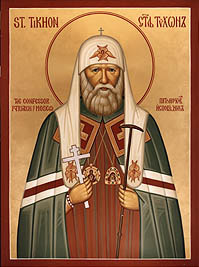

A Homily of Holy New Hieromartyr Tikhon, Metropolitan of Moscow
Given when he was Bishop of the Aleutian Islands and North America
Sunday of Orthodoxy, the First Sunday of Great Lent
1903
A Call to True Orthodox Missionary Work

This Sunday, Brethren, begins the week of Orthodoxy, or the week of the Triumph of Orthodoxy, because it is today that the Holy Orthodox Church solemnly recalls its victory over the Iconoclast heresy and other heresies and gratefully remembers all who fought for the Orthodox faith in word, writing, teaching, suffering, or godly living.
Keeping the day of Orthodoxy, Orthodox people ought to remember it is their sacred duty to stand firm in their Orthodox faith and carefully to keep it.
For us it is a precious treasure: in it we were born and raised; all the important events of our life are related to it, and it is ever ready to give us its help and blessing in all our needs and good undertakings, however unimportant they may seem. It supplies us with strength, good cheer and consolation, it heals, purifies and saves us.
The Orthodox faith is also dear to us because it is the Faith of our Fathers. For its sake the Apostles bore pain and labored; martyrs and preachers suffered for it; champions, who were like unto the saints, shed their tears and their blood; pastors and teachers fought for it; and our ancestors stood for it, whose legacy it was that to us it should be dearer than the pupil of our eyes.
And as to us, their descendants - do we preserve the Orthodox faith, do we keep to its Gospels? Of yore, the prophet Elijah, this great worker for the glory of God, complained that the Sons of Israel have abandoned the Testament of the Lord, leaning away from it towards the gods of the heathen. Yet the Lord revealed to His prophet, that amongst the Israelites there still were seven thousand people who have not knelt before Baal (3 Kings 19) . Likewise, no doubt, in our days also there are some true followers of Christ. "The Lord knoweth them that are His." (2 Timothy 2.19)
We do occasionally meet sons of the Church, who are obedient to Her decrees, who honor their spiritual pastors, love the Church of God and the beauty of its exterior, who are eager to attend to its Divine Service and to lead a good life, who recognize their human failings and sincerely repent their sins.
But are there many such among us? Are there not more people, "in whom the weeds of vanity and passion allow but little fruit to the influence of the Gospel, or even in whom it is altogether fruitless, who resist the truth of the Gospel, because of the increase of their sins, who renounce the gift of the Lord and repudiate the Grace of God" (a quotation from the service of Orthodoxy).
"I have given birth to sons and have glorified them, yet they deny Me," said the Lord in the olden days concerning Israel. And today also there are many who were born, raised and glorified by the Lord in the Orthodox faith, yet who deny their faith, pay no attention to the teachings of the Church, do not keep its injunctions, do not listen to their spiritual pastors and remain cold towards the divine service and the Church of God.
How speedily some of us lose the Orthodox faith in this country of many creeds and tribes! They begin their apostasy with things, which in their eyes have but little importance. They judge it is "old fashioned" and "not accepted amongst educated people" to observe all such customs as: praying before and after meals, or even morning and night, to wear a cross, to keep icons in their houses and to keep church holidays and fast days. They even do not stop at this, but go further: they seldom go to church and sometimes not at all, as a man has to have some rest on a Sunday (...in a saloon); they do not go to confession, they dispense with church marriage and delay baptizing their children.
And in this way their ties with Orthodox faith are broken! They remember the Church on their deathbed, and some don't even do that! To excuse their apostasy they naively say: "this is not the old country, this is America, and consequently it is impossible to observe all the demands of the Church.", as if the word of Christ is of use for the old country only and not for the whole world. As if the Orthodox faith is not the foundation of the world!
"Ah, sinful nation, a people laden with iniquity, a seed of evil doers, children that are corrupters: they have forsaken the Lord, they have provoked the Holy One of Israel into anger." (Isaiah, 1, 4)
If you do not preserve the Orthodox faith and the commandments of God, the least you can do is not to humiliate your hearts by inventing false excuses for your sins!
If you do not honor our customs, the least you can do is not to laugh at things you do not know or understand.
If you do not accept the motherly care of the Holy Orthodox Church, the least you can do is to confess you act wrongly, that you are sinning against the Church and behave like children!
If you do, the Orthodox Church may forgive you, like a loving mother, your coldness and slights, and will receive you back into her embrace, as if you were erring children.
Holding to the Orthodox faith, as to something holy, loving it with all their hearts and prizing it above all, Orthodox people ought, moreover, to endeavor to spread it amongst people of other creeds.
Christ the Savior has said that "neither do men light a candle and put it under a bushel, but on a candle stick, and it giveth light unto all that are in the house." (Matthew 5, 15)
The light of Orthodoxy was not lit to shine only on a small number of men. The Orthodox Church is universal; it remembers the words of its Founder: "Go ye into the world, and preach the gospel to every creature" (Luke, 16, 15), "go ye therefore and teach all nations." (Matthew 28, 19)
We ought to share our spiritual wealth, our truth, light and joy with others, who are deprived of these blessings, but often are seeking them and thirsting for them.
Once "a vision appeared to Paul in the night, there stood a man from Macedonia and prayed him, saying, come over into Macedonia, and help us," (The Acts 16, 9) after which the apostle started for this country to preach Christ. We also hear a similar inviting voice. We live surrounded by people of alien creeds; in the sea of other religions, our Church is a small island of salvation, towards which swim some of the people, plunged in the sea of life. "Come, hurry, help," we sometimes hear from the heathen of far Alaska, and oftener from those who are our brothers in blood and once were our brothers in faith also, the Uniates. "Receive us into your community, give us one of your good pastors, send us a Priest that we might have the Divine Service performed for us of a holy day, help us to build a church, to start a school for our children, so that they do not lose in America their faith and nationality," those are the wails we often hear, especially of late.
And are we to remain deaf and insensible? God save us from such a lack of sympathy. Otherwise woe unto us, "for we have taken away the key of knowledge, we entered not in ourselves, and them that were entering in we hindered." (Luke 11.52)
But who is to work for the spread of the Orthodox faith, for the increase of the children of the Orthodox Church? Pastors and missionaries, you answer. You are right; but are they to be alone?
St. Paul wisely compares the Church of Christ to a body, and the life of a body is shared by all the members. So it ought to be in the life of the Church also. "The whole body fitly joined together and compacted by that which every joint supplieth, according to the effectual working in the measure of every part, maketh increase of the body unto the edifying of itself in love." (Ephesians 4.16)
At the beginning, not only pastors alone suffered for the faith of Christ, but lay people also, men, women and even children. Heresies were fought against by lay people as well. Likewise, the spread of Christ's faith ought to be near and precious to the heart of every Christian. In this work every member of the Church ought to take a lively and heart-felt interest. This interest may show itself in personal preaching of the Gospel of Christ.
And to our great joy, we know of such examples amongst our lay brethren. In Sitka, members of the Indian brotherhood do missionary work amongst other inhabitants of their villages. And one zealous brother took a trip to a distant village (Kilisno), and helped the local Priest very much in shielding the simple and credulous children of the Orthodox Church against alien influences, by his own explanations and persuasions. Moreover, in many places of the United States, those who have left Uniatism to join Orthodoxy point out to their friends where the truth is to be found, and dispose them to enter the Orthodox Church.
Needless to say, it is not everybody among us who has the opportunity or the faculty to preach the gospel personally. And in view of this I shall indicate to you, Brethren, what every man can do for the spread of Orthodoxy and what he ought to do.
The Apostolic Epistles often disclose the fact, that when the Apostles went to distant places to preach, the faithful often helped them with their prayers and their offerings. Saint Paul sought this help of the Christians especially.
Consequently we can express the interests we take in the cause of the Gospel in praying to the Lord,
we pray for all this, but mostly with lips and but seldom with the heart.
that He should take this holy cause under His protection,
that He should give its servants the strength to do their work worthily,
that He should help them to conquer difficulties and dangers, which are part of the work,
that He should not allow them to grow depressed or weaken in their zeal;
that He should open the hearts of the unbelieving for the hearing and acceptance of the Gospel of Christ,
that He should impart to them the word of truth,
that He should unite them to the Holy Catholic and Apostolic Church;
that He should confirm, increase and pacify His Church, keeping it forever invincible",
Don't we often hear such remarks as these: "what is the use of these special prayers for the newly initiated? They do not exist in our time, except, perhaps, in the out of the way places of America and Asia; let them pray for such where there are any; as to our country such prayers only needlessly prolong the service which is not short by any means, as it is." Woe to our lack of wisdom! Woe to our carelessness and idleness!
Offering earnest prayers for the successful preaching of Christ, we can also show our interest by helping it materially. It was so in the primitive Church, and the Apostles lovingly accepted material help to the cause of the preaching, seeing in it an expression of Christian love and zeal.
In our days, these offerings are especially needed, because for the lack of them the work often comes to a dead stop. For the lack of them preachers can not be sent out, or supported, churches can not be built or schools founded, the needy amongst the newly converted can not be helped. All this needs money and members of other religions always find a way of supplying it.
Perhaps, you will say, that these people are richer than ourselves. This is true enough, but great means are accumulated by small, and if everybody amongst us gave what he could towards this purpose, we also could raise considerable means. Accordingly, do not be ashamed of the smallness of your offering. If you have much, offer all you can, but do offer, do not lose the chance of helping the cause of the conversion of your neighbors to Christ, because by so doing, in the words of St. James, "you shall save your own soul from death and shall hide a multitude of sins."
Orthodox people! In celebrating the day of Orthodoxy, you must devote yourselves to the Orthodox faith not in word or tongue only, but in deed and in truth.
One Church, Vol. 4, No 3, March 1995. Editing not in original
We confidently recommend our web service provider, Orthodox Internet Services: excellent personal customer service, a fast and reliable server, excellent spam filtering, and an easy to use comprehensive control panel.